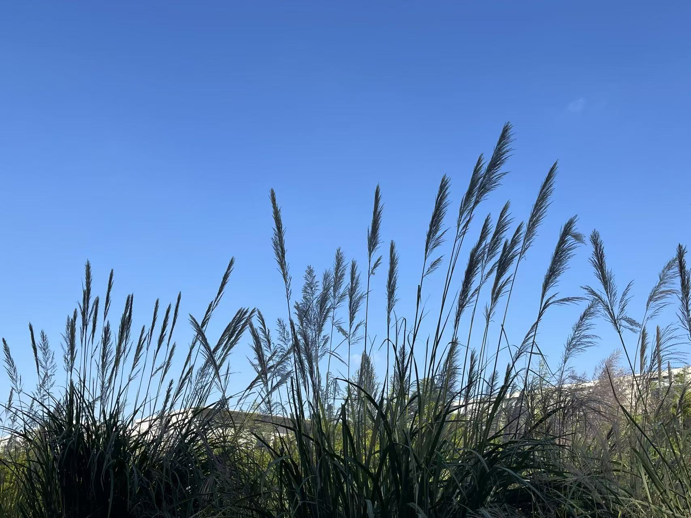
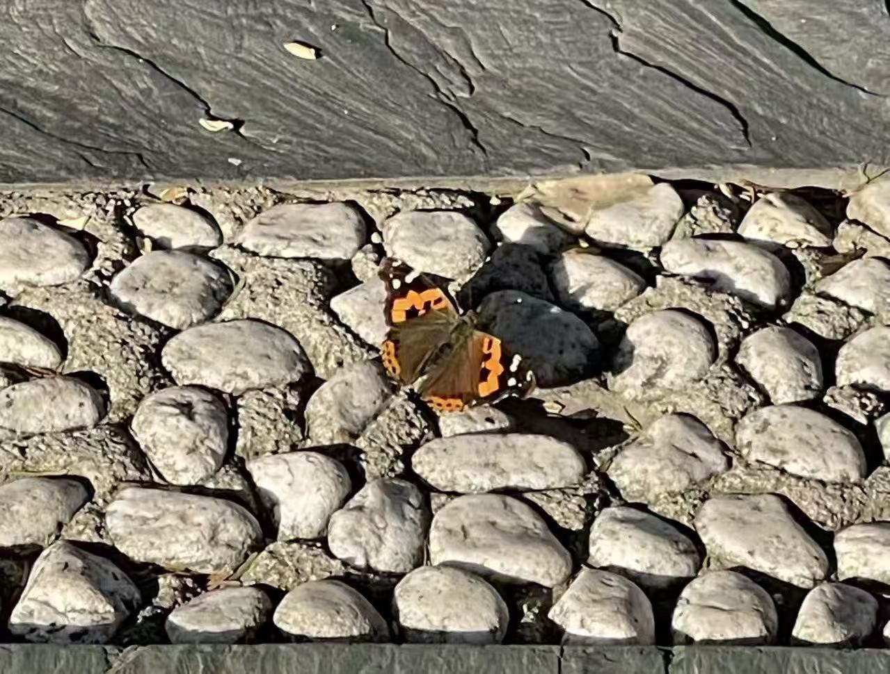

──────────────── ✦ ────────────────
First week.
Still no real rhythm.
Still no rush.
o(＾▽＾)o
《（ ）╯
/ \
──────────────── ✦ ────────────────
Walking back from campus...
The sun spills soft gold on the pavement.

I walked slowly, not tired exactly, but just...unhurried.
A breeze burshes the back of my neck, gentle, like memory.
Reeds sway in quiet rhythm, butterflies drift like thoughts.
 
Each step hummed. The day was done.
And the room, my room, waited at the end of the path like a quiet sentence not yet spoken.
Near the dorm gate, my steps begin to slow.
🚶🏻♀️🚶🏻♀️🚶🏻♀️🚶🏻♀️🚶🏻♀️🚶🏻♀️🚶🏻♀️🚶🏻♀️🚶🏻♀️🚶🏻♀️🚶🏻♀️🚶🏻♀️🚶🏻♀️🚶🏻♀️🚶🏻♀️🚶🏻♀️🚶🏻♀️🚶🏻♀️

🏠🏠🏠🏠🏠🏠🏠🏠🏠🏠🏠🏠🏠🏠🏠🏠🏠🏠
I am finally back!
＼(＾▽＾)／ ＼(≧▽≦)／ ＼(￣▽￣)／
✧･ﾟ: *✧･ﾟ:* *:･ﾟ✧*:･ﾟ✧
.・゜゜・ happy vibes only ・゜゜・．
✧･ﾟ: *✧･ﾟ:* *:･ﾟ✧*:･ﾟ✧